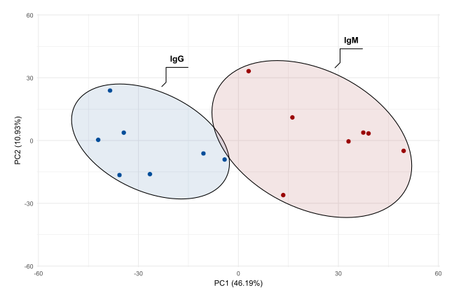

Code
library(data.table)
library(reactable)
df <- fread("../inst/data/PCA_table.txt")
reactable(
df,
theme = reactableTheme(
backgroundColor = "transparent"
)
)Principal Component Analysis (PCA) serves as a dimensionality reduction technique, condensing large datasets into a smaller set while retaining essential patterns and trends.
This is an example of a data format containing the necessary information for PCA visualizations. The table includes mock data specifically generated for this purpose.
The “Sample” column contains unique identifiers for each sample. The “PC1” and “PC2” columns represent the results from the Principal Component Analysis. In the “Group” column there are different groups that the samples are being divided into.
PCA diagrams can be constructed using the geom_mark_ellipse() function from the ggforce package.
This geom facilitates annotating sets of points using ellipses.
The enclosing ellipses are evaluated via the Khachiyan algorithm, ensuring a solution within the specified tolerance level. Given that this geom is frequently expanded, minor deviations of some points outside the ellipses are of minimal concern.
This PCA diagram illustrates the different annotating sets.
library(ggplot2)
library(ggsci)
library(ggforce)
library(colorspace)
ggplot(df, aes(PC1, PC2)) +
geom_mark_ellipse(aes(fill = Group, label = Group), alpha = .1, expand = unit(3, "mm"), label.fill = "transparent") +
geom_point(aes(fill = Group), shape = 21, size = 3, stroke = .25, color = "white") +
scale_fill_manual(
values = c(
"IgM" = "#990000",
"IgG" = "#004d99"
)
) +
scale_x_continuous(limits = c(-55, 55)) +
scale_y_continuous(limits = c(-55, 55)) +
theme_minimal() +
theme(
legend.position = "none",
plot.margin = margin(20, 20, 20, 20)
) +
labs(x = "PC1 (46.19%)", y = "PC2 (10.93%)")